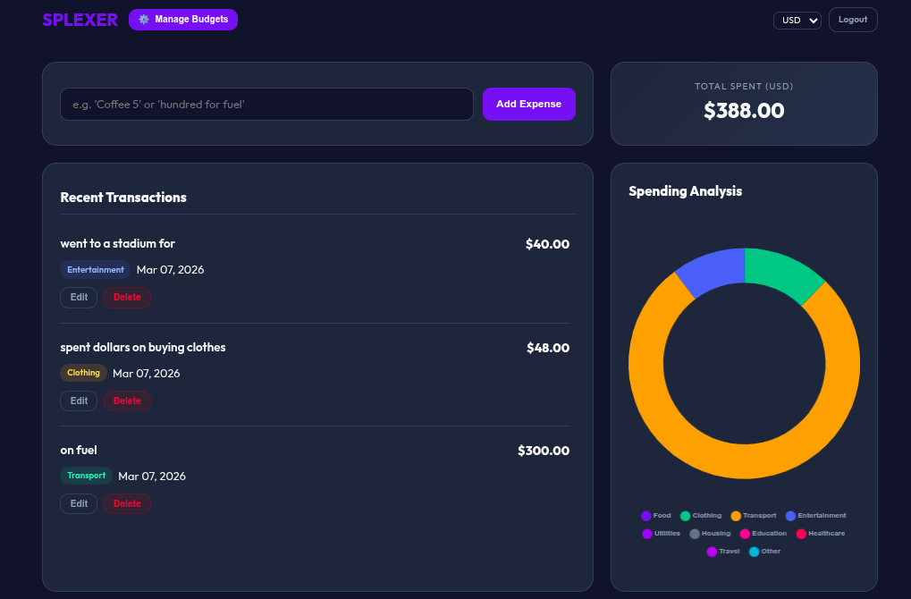
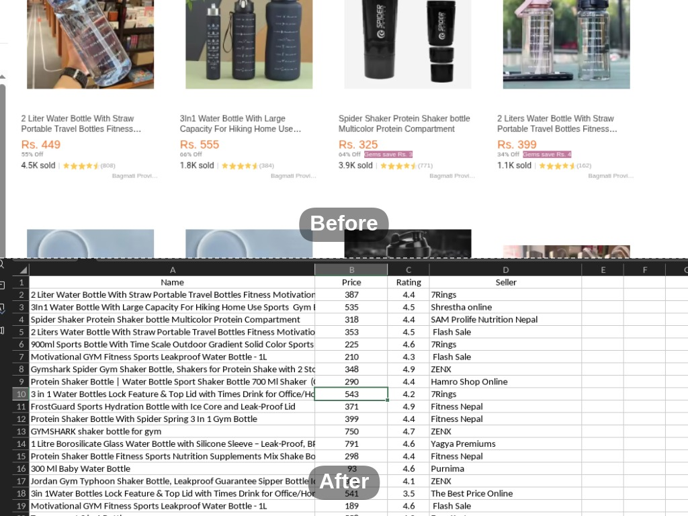
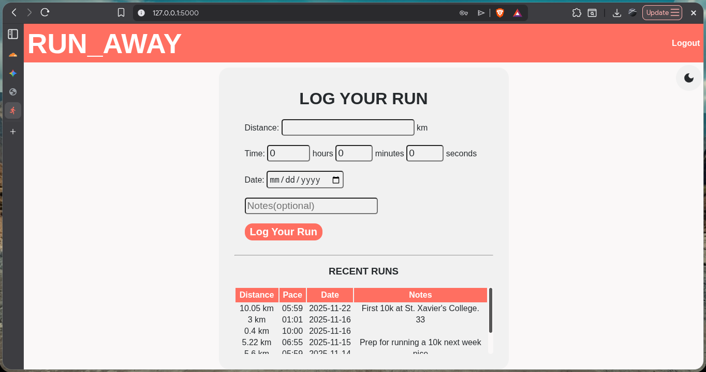
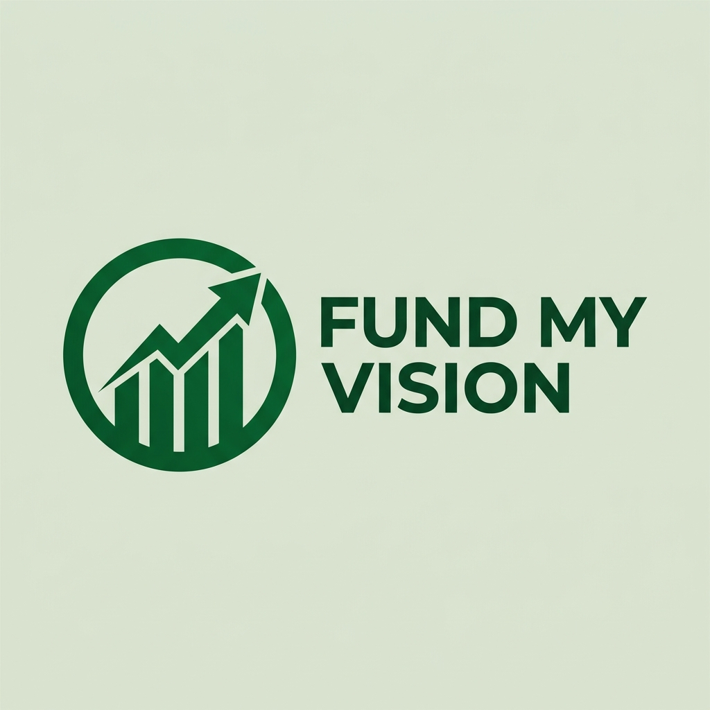

Hi, I'm Sohan
Software Engineering Student & Systems Thinker
Turning curiosity into functional logic. Inspired by first-principles problem solving and low-level engineering.
0
+Cups of Coffee to Ship Splexer
0
Intense Hackathon App Built
0
Active Experimental Projects
0
%Fuelled by Football & Chiya
A student who thinks in systems and logic.
I got hooked on computer science through Harvard's CS50, learning to love the grind of breaking down complex problems. Fresh out of high school at St. Xavier's, Kathmandu, I spend my time exploring everything from data extraction pipelines to low-level systems, rapid prototyping financial trackers, and playing the guitar.
First-Principles Thinking
Data Automation
Rapid Prototyping
Low-Level Curiosity
Technical Proficiency
Languages
Backend & Tools
How I Work
01. Discover
Research, requirements gathering, and strategic planning to ensure project alignment.
02. Design
Creating wireframes, high-fidelity prototypes, and comprehensive design systems.
03. Develop
Scalable frontend architecture, clean code implementation, and API integrations.
04. Launch
Rigorous testing, performance optimization, accessibility checks, and final deployment.
Featured Projects

Splexer
A PHP-based analytics application that uses basic NLP concepts to parse natural text financial entries and map them to dynamic, visual data graphs.
Problem: Tracking manual daily expenses is tedious and unengaging.
Solution: Built a PHP application utilizing NLP to parse natural text financial entries into visual data graphs.
Outcome: A highly functional financial data tracking and visualization prototype built via rapid prototyping.

Daraz Tracker
An automated Python web extraction tool that reverse-engineered internal production APIs to scrape and log live product listings into structured storage.
Problem: Tracking e-commerce market price fluctuations in Nepal is entirely manual.
Solution: Engineered an automated Python tool that reverse-engineered internal APIs to scrape and log live product data.
Outcome: Created a solid technical foundation for localized market analytics and price drop triggers.

run_away
A lightweight running telemetry tracking application built as a CS50 final project, focusing on state management, user profile isolation, and file data persistence.
Problem: Needing a streamlined, custom logger for monitoring personal running telemetry.
Solution: Developed a lightweight tracking app focusing on state management, user profile isolation, and file data persistence.
Outcome: Successfully demonstrated core software architecture and logical data processing structures.

FundMyVision
An online shark-tank-style startup pitch platform built during a high-stakes hackathon, with a personally engineered Node.js backend API.
Problem: Crowdsourcing investment platforms require rapid, modern MVPs to secure validation under time pressure.
Solution: Collaborated in a team to architect a pitch platform, personally designing and engineering the Node.js backend API routes.
Outcome: Delivered a working team prototype under intense deadline pressure.
My Journey
+2 Science
St. Xavier's College, Maitighar, Kathmandu
- Completed high school board examinations with a heavy focus on physics, mathematics, and foundational programming.
CS50: Introduction to Computer Science
Harvard University (via edX)
- Self-studied Harvard's flagship CS course, developing a rigorous foundation in algorithms, memory management, data structures, and systems-level thinking.
- Developed run_away — a CS50 final project tracking personal running telemetry with file-based persistence.
Self-Directed Engineering Projects
Independent
- Built Splexer — a PHP-based financial tracker using NLP to parse natural language expense entries.
- Engineered Daraz Tracker — a Python scraper reverse-engineering internal APIs for Nepal e-commerce price monitoring.
- Collaborated on FundMyVision — a hackathon startup pitch platform, personally building the Node.js backend API.
What I'm Building Towards
Software Engineering
Building clean, reliable scripts and backend applications. Interested in writing software that solves real problems with minimal dependencies and clear logic.
Systems & Low-Level Development
Exploring virtual machine architectures, compilers, and internal computer systems. Fascinated by how software physically interacts with hardware and memory.
Let's talk systems, code, or ideas.
Always open to connecting with fellow engineers, collaborators, or anyone building something interesting. Drop me a message.